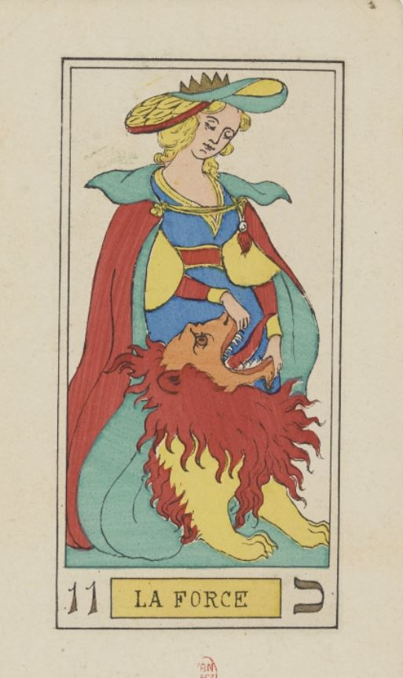

Fran is a young young young maker. and I like that. There is a quality in being young that is unreplicatable. I’m writing this at my 27 and I already feel I'm losing it. It’s not necessarily/just risk taking. It’s giving no fuck what the audience thinks, it’s being open to one’s self intuitions, being proud enough to show all bits of good or bad improvisations that happened in rehearsals, and not care of things getting too personal. There is a family (most probably); a father, a mother, a son, and a daughter that is just too cool for the family (that’s always the case, no?) and just like any other family they have their own shit that no outsider understands; how they spend time and entertain each other is absurd (if you doubt just think about your own family). I feel Mime is friendlier than choreography. Mime needs to escape from saying words. Multiple songs in the piece are mostly in the same vibe, not many moments taking things far. Things happen but they don’t matter so much. The work lacks relation with time, building up and tension. Things are happening one after another and with the elements of a rural family, parent and children gap, awkward family collective moments keeps the audience in a mode of voyage, but also acknowledges the audience; moments that we are looked at, we are played with and we are expected to laugh. But a good question is “who are we?” The most intriguing/triggering moment (spoiler alert) is after a sudden darkness, (spoiler alert) there comes a sad dead pig out of nowhere on the stage. Alone. A kind of morbid shock that makes me wake up, something spreads in the room. something has changed. I feel the unexpected part of everyday life, a perfect mirror in front of me: death appears in the bare, swollen and pink body of the pig, a bit dirty as expected. Suddenly the family gets together over the dead body of the pig in mourning. Soon after is the birthday of the son blowing the candle of 25. What does the death and the birth bring together in the theatre? I leave this question here. In the book practical performance magic by Maija Hirvanen and Eva Neklyaeva there is a part that I find relevant enough to quote here: Quote Title: talking about performances that do not talk about anything in particular Sometimes, when presenting performances, curators seek to give audiences tools to understand them; at other times, the curator intends to help spectators forget that they need to understand anything at all. A concept of understanding is a violent one. It comes from the line of thought that assumes that the world can be understood in its entirety; it abandons and ridicules all the parts of it that cannot be understood. (…) Unlearning understanding, or better, staying with the otherness that does not need your understanding, can be practised in a performative space, where often you leave without having understood anything, but having experienced a lot. Recipe: and then there are some fierce makers who choose to not tell you a story. whose work is not “about” something. who just aim for magic for a kind of intense presence. A high vibration on the stage. There is no easy way of talking about a show like this to audiences, as traditional communication is based on narratives. Slow down. Take a breath. feel what the show does to your body. How it connects to the wilderness within, without violence, like in the force card of tarot. Imagine approaching a lion and, with a serene face, putting your hands inside its mouth, and slowly, with Love, pulling it wide open. This is the key to talk about shows that don’t talk about anything in particular. End of quote “What the show does to your body” is a great question to think about in Fran’s show and in particular the dead pig scene; There’s a visceral pause. You might not notice it at first, but your breath catches, just a little. when the pig enters. It’s as if the theatre air thickens. A shift from comedy to something ancient and raw; my skin reacts before my mind. Like the body's own memory is triggered by the image of death. The pig is a pig and that matters. but it’s not just a pig. I am reminded of things like laughing with friends and suddenly remembering someone who died. Or thinking about family and remembering the fact of death. At the end, this work captures the maker in an ambitious moment, and I really like that I guess.
